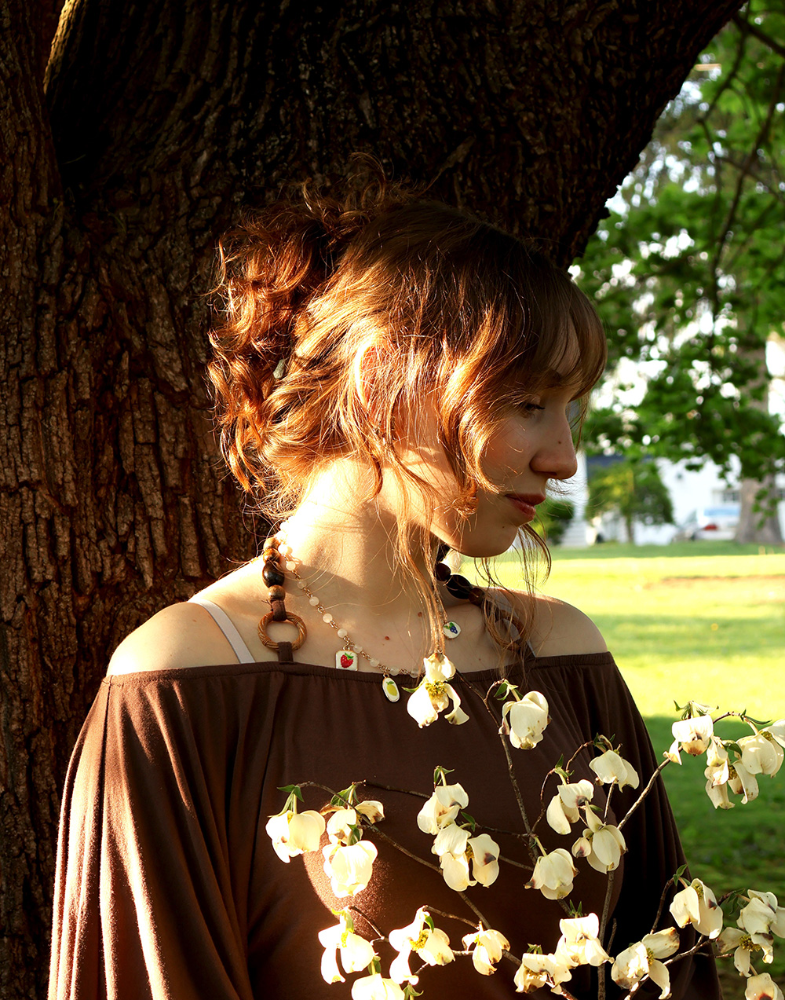

About Me
Hello! I'm a creative graphic designer who is passionate about delivering innovative visual concepts. With strong collaborative skills and the ability to manage projects from concept to completion, work gets done efficiently and effectively.
I love to incorporate my own photography and illustrations into my work while taking inspiration from the natural and cultural world around me.
In the graphic design industry, I would love to work on magazines or musicians concept designs someday.
When I'm not designing, I love working on film sets with my friends and playing cozy video games.

View My Resume